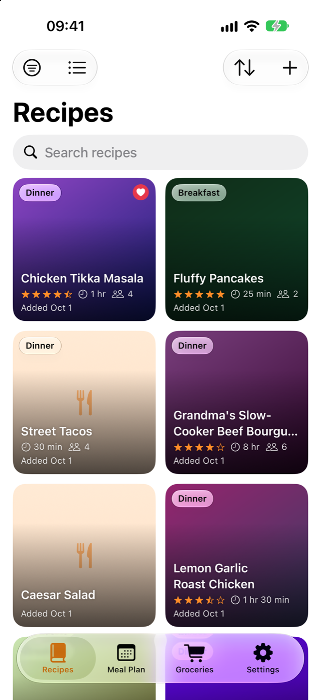
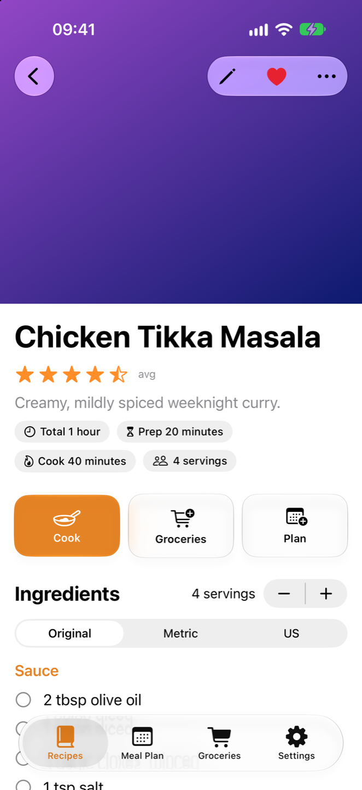
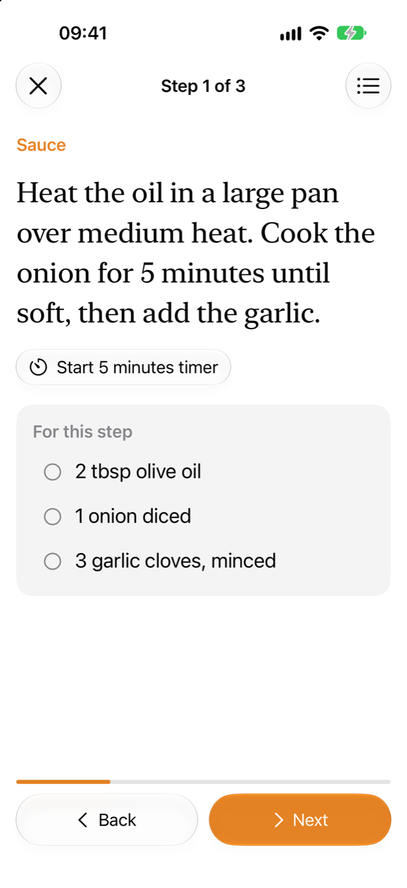
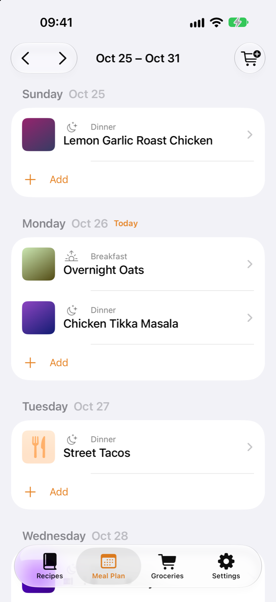
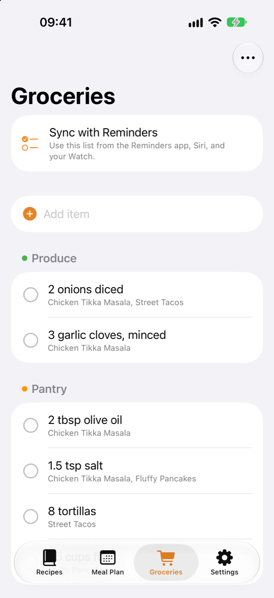
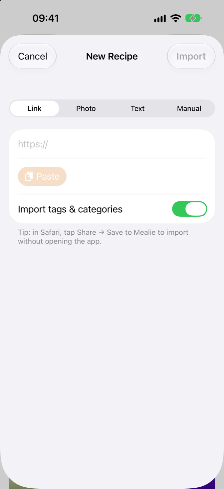

Your Mealie, in your pocket.
A fast, native iPhone and iPad app for your self-hosted Mealie server. Browse recipes, cook step by step, plan the week, and shop from a list that syncs with Apple Reminders.
Works with Mealie v2.0 and later. Requires your own Mealie server.

Your whole recipe box, one tap away.
Browse as a photo grid or a detailed list. Search, sort, and filter by favorites, cookbook, category, tag, or tool, with infinite scroll through even the biggest libraries.
Rate, favorite, comment, share, and edit recipes without opening a browser.
Original, Metric, or US. Flip every ingredient's units with one toggle. Cups of flour become grams, and tablespoons stay tablespoons.

One step at a time, in type you can read across the counter.
Cook mode shows each step large and on its own, along with just the ingredients that step needs.
- Timers from the recipe. "Simmer for 10 minutes" becomes a button, with a notification when it's done.
- Scale servings and every quantity follows.
- Screen stays awake while you cook.
- "I Made This" at the end logs it to the recipe's timeline in Mealie.

Plan the week before you leave the couch.
See the whole week at a glance. Add a recipe or a quick note to any day and meal, or let Mealie pick a random recipe when nobody can decide.
Plan to list in one tap. Add the whole week's ingredients to your groceries straight from the planner.

A shopping list that knows where everything came from.
Your Mealie shopping list, grouped by aisle label, with each item's source recipe underneath. Check, add, edit, and clear items, across as many lists as your household keeps.
On Hand pantry. Mark staples like salt and olive oil as On Hand, and they start unchecked when you add a recipe to groceries, so you only buy what you need.

Shop from Reminders. Siri, Apple Watch, and your family's phones included.
Pair your Mealie list with a Reminders list and changes flow both ways: check off milk on your Watch, ask Siri to add eggs, or let someone at home add to the list from the Reminders app. Set the list type to Groceries and Reminders sorts everything into aisles for you.
Edits don't fight
A three-way merge tracks what changed on each side since the last sync, so edits never ping-pong and the newer change wins.
Pairings that stick
Every reminder carries a link to its Mealie item, so pairs survive reinstalls, iCloud resets, and several phones syncing the same list.
A safety brake
If a lot of items vanish from one side at once, sync pauses and asks before deleting anything on the other.
Save a recipe from anywhere.
Paste a link and Mealie's scraper does the rest. Snap a photo of a cookbook page or paste text for Mealie's AI import, or write one from scratch with sections, notes, tags, and categories.
Parse Ingredients runs Mealie's parser so every ingredient is linked to a food, ready for unit conversion and On Hand.
Save to Mealie. Tap Share in Safari or any app and send a recipe straight to your server, without opening Mealie Mobile.

Built for how you actually cook.
Made for iPad
Ingredients stay pinned in one column while you work through the steps in the other. The meal plan becomes a week grid, and Split View just works.
Siri & Shortcuts
"Add to groceries in Mealie" and "Sync groceries" work from Siri, the Shortcuts app, and your automations.
Sign in once
Your password is used once to create a Mealie API token, which is kept in the Keychain. Or paste a token you already have.
Home-lab friendly
Plain-HTTP servers on your LAN or a tailnet are fine, e.g. http://192.168.1.20:9000. No
reverse proxy required.
Quick actions
Long-press a recipe, or swipe a row, to favorite it, add it to the meal plan, or share it.
No tracking
No account with us, no analytics, no ads. The app talks to your Mealie server and nothing else. Read the privacy policy.
Bring your Mealie into the kitchen.
Download Mealie Mobile and connect it to your server in under a minute.